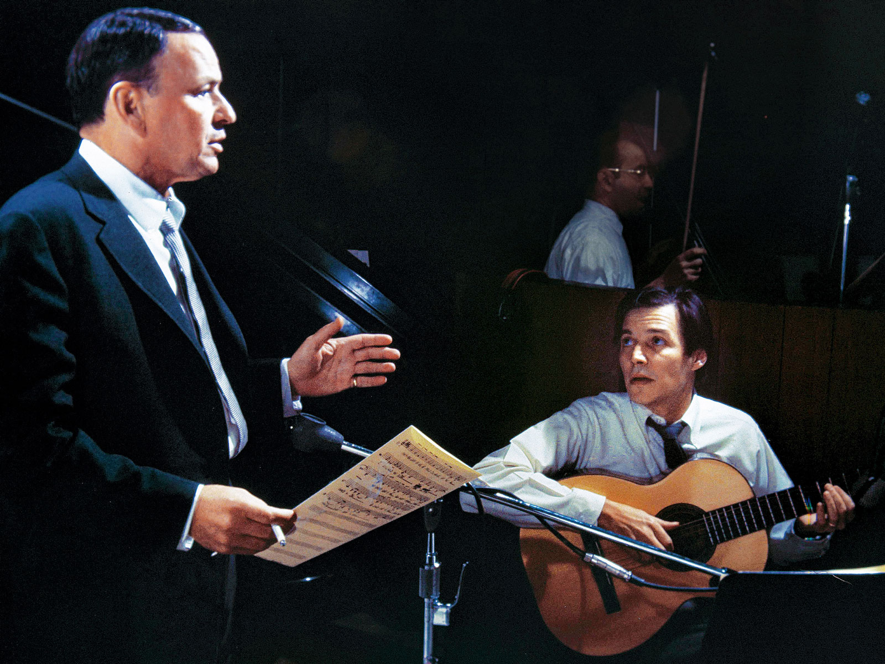

Paulo Bittencourt Sings Bossa Nova
What is bossa nova?
The History of João Gilberto, Tom Jobim and Vinícius de Moraes’ Music
© Paulo Bittencourt
In Vienna, Austria, I graduated in Opera Singing, but, to be honest, I don’t love opera as much as I love bossa nova.
Hang on. You don’t know what bossa nova is?!
Well, bossa nova emerged in Brazil, at the end of the 1950s. Young Brazilian musicians, residents of the South Zone of Rio de Janeiro, where the beaches of Copacabana and Ipanema are, were more interested in jazz than in the Brazilian music of that time, which they considered old-fashioned. Similar to opera arias, Brazilian songs were then sung with an operatic voice. The lyrics were cheesy, their phraseology wasn’t that spoken by the youth.
Many of these musicians played in Rio’s bars and nightclubs. Being big fans of jazz, elements of this musical style ended up flowing into their compositions, making their music sound different from what Brazilians were used to hearing. They often gathered to listen to the latest jazz records or show each other their compositions. They weren’t, however, aware that they were creating a new musical genre.
That changed when a young man from the State of Bahia went to try his hand at a musician’s career in Rio de Janeiro. His name was João Gilberto. Not making enough money even to pay the rent, João lived in his friends’ apartments, who, over time, couldn’t stand his strange habits any longer and kicked him out. Whenever João didn’t have anyone willing to offer him a bed, he left Rio and went to live with his sister. There, he would lock himself in the bathroom and spend hours playing a single chord, obsessed with the idea of finding a new way to play the guitar.
And he found it. João Gilberto stylized the samba rhythm, applying jazz chords to it. Furthermore, instead of hitting the strings, he played the low notes with his thumb and, at once, plucked the other strings with his index, middle and ring fingers. Regarding the singing, João began to sing quietly, softly, in a velvety way and without vibrato.
That was it! Back in Rio, João Gilberto showed the other musicians his new way of playing and singing. One who was very impressed was Antônio Carlos Jobim, better known as Tom Jobim, who would become the most international of the bossa nova composers. In 1958, singer Elizeth Cardoso recorded an album entitled Canção do Amor Demais, entirely with compositions by Jobim, with lyrics by Vinícius de Moraes. João accompanied Elizeth on the guitar on two tracks: Chega de Saudade and Outra Vez. That was the first album to record his new way of playing. Three months later, Gilberto recorded his own album, singing and playing. Bossa nova, also called Brazilian jazz, had officially been born.
The word bossa means protuberance, protrusion. In the slang of the time, it connoted fashion, talent, someone or something that stands out, or is sophisticated. Thus, bossa nova came to mean something like new sophistication.
Frank Sinatra and Antônio Carlos Jobim.
Touring Brazil, American and European musicians came into contact with this new musical style, promoting it in their countries. Bossa nova became so popular in the United States that, in 1962, Brazilian musicians were invited to perform at Carnegie Hall, in New York, in a concert entitled Bossa Nova (New Brazilian Jazz). In the audience were jazz icons, such as Miles Davis, Tony Bennett, Peggy Lee and Herbie Mann. The concert was broadcast live to several American and European radio stations. Two weeks later, the cream of the bossa nova musicians performed at the George Washington Auditorium and was welcomed at the White House by Jacqueline Kennedy.
From then on, bossa nova conquered the entire world. According to Performing Songwriter magazine, the song Garota de Ipanema (The Girl from Ipanema) is worldwide the second-most recorded song of all time.
Paulo Bittencourt’s Music
Song Title
- Aquarela
- O Que Será
- Tem Dó
- Tamanco no Samba
- Bonita
- Começou de Brincadeira
- Copacabana
- Deixa
- Desencontro
- Melodia Sentimental
- Mocinho Bonito
- Sonho de Um Carnaval
- Tarde em Itapuã
- Caminhos Cruzados